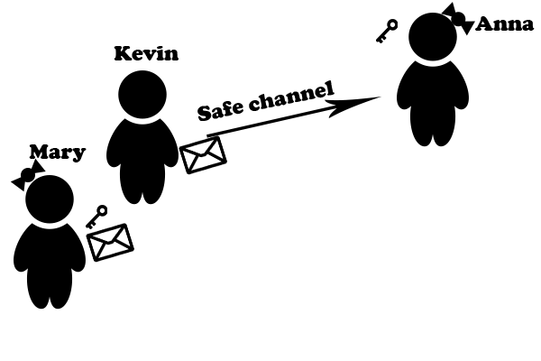

Cryptoanalysis
Cryptoanalysis is the branch of science opposite to the cryptography. Cryptoanalysis is the study of analyzing the encrypted messages on order to find the true information. Like in the case of cryptography cryptoanalysis is strictly connected with the mathematics.
Despite using mathematical algoriths to break the cipher cryptoanalysis also uses side-channel-attacks. It means that cryptoanalysis finds the weeknesses of the encryption algorithms and exploits vices in the implementation.
There exists four main situations - what kind of information cryptoanalyst can have:
- Cryptoanalyst owns only encrypted text. The most difficult inconvenient situation for the cryptoanalyst
- Cryptoanalyst owns part of encrypted text with coresponding encrypted text.
- Cryptoanalyst has momentary access to the encrypting machine
- Cryptoanalyst has momentary access to the decrypting machine
The way of attack on the encrypted text changes respectively to the situation however the aim is always the same - find the key which was used to encrypt the message and then use it to break the cryptogram.
There are three main resources which we have to in mind when we are attacking cryptosystem:
- Time - whih is required to perform all computation steps, tests to find the key. The less time we need to find the key the more effecting is our attack.
- Memory - computer's memory required to perform all the computations and cut their time. The more memory we have the less time we spend on breaking the key.
- Data - amount of intercepted data, not only encrypted text but also fragments of key or original message. The more data we have the easier become the attack to perform.
Way of wiretapes
There are two vulerabilities concerning exchanging of messages:
- Active wiretape

- Passive wiretape
Active wiretape is the vulerabilty agianst the authenticity of the message. The attacker impersonates the sender of the message. The action which prevents spoofing is using the electonical signature.
Passive wiretape is the vulnerability against the confidentiality of the message. The attacker tries to steal the prvite message. The action which prevents that is using the cipher.